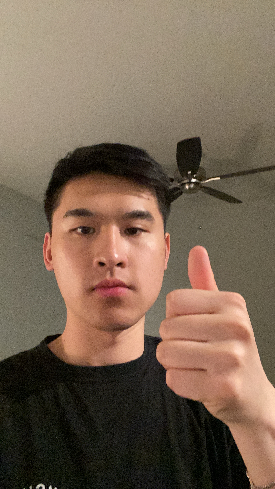

|
Noah Yi-Ting Hung
I am a second-year PhD student in Mathematics and Statistics at Georgia State University, under the guidance of Professor Li-Hsiang Lin. My research focuses on the intersection of machine learning, image science, bioinformatics, and uncertainty control, with a particular interest in health information technology and model simplification.
I earned my Master's in Joint Statistics and Computer Science from Purdue University, where I worked with Professor Qi Guo on a computer vision project. Prior to starting my PhD, I was a graduate research assistant under the supervision of Professor Henry Horng-Shing Lu, working on deep mixture density networks. I completed my undergraduate studies at National Taiwan University, working with Ku-Wei Liao on reliability research. During my time there, I received the 4th National Taiwan University Best Undergraduate Thesis Award and the Tomotake Takasaka Scholarship.
|

|
Amazon
Applied Scientist Intern with
Edward Vul, PhD,
Luigi Tedesco,
Tianlang Chen, PhD
San Diego, CA · Jun 2024 - Present
Developed an evaluation metric with the Search and Discovery team to evaluate LLM text generation based on input text ranking
|

|
|
PSDSARC Applied Reseach Center
Signal Processing Engineer
Riyadh, Saudi Arabia · Mar 2019 - Sep 2023
Developed real-time signal processing on software-defined radio for communication and passive sensing systems [RadarConf '20].
|

|
|
Purdue University
Graduate Student Researcher with Professor Qi Guo
West Lafayette, IN · May 2022 - May 2023
Developed a framework to improve stereo image reconstruction [arXiv '22].
|

|
|
Education
|
University of California, San Diego
PhD in Computer Science
La Jolla, CA · 2023 - Present
Advisor: Julian McAuley
|

|
|
Purdue University
MS in Electrical and Computer Engineering
West Lafayette, IN · 2021 - 2023
|
|
|
King Saud University
BS in Electrical Engineering
Riyadh, Saudi Arabia · 2013 - 2018
|

|
|
Feel free to steal this website's source code. Do not scrape the HTML from this page itself, as it includes analytics tags that you do not want on your own website — use the github code instead. Also, consider using Leonid Keselman's Jekyll fork of this page.
|
|

{kind=link}